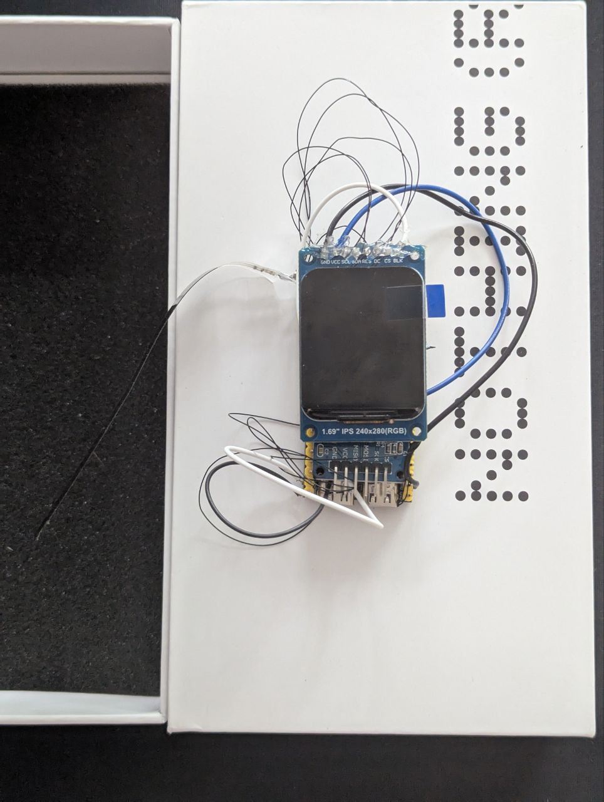
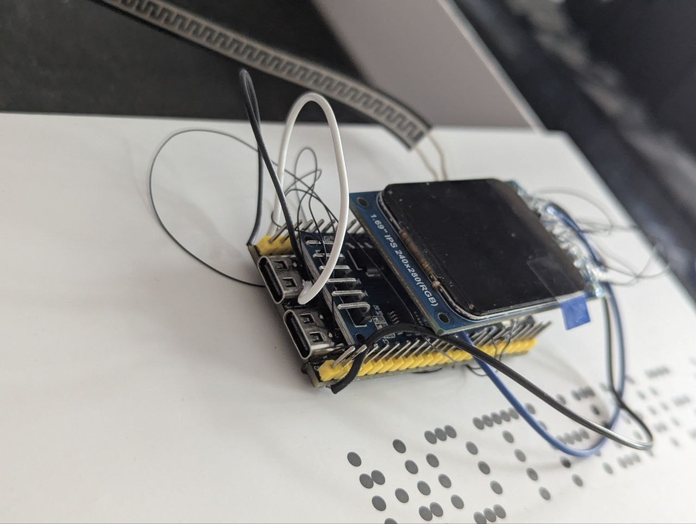
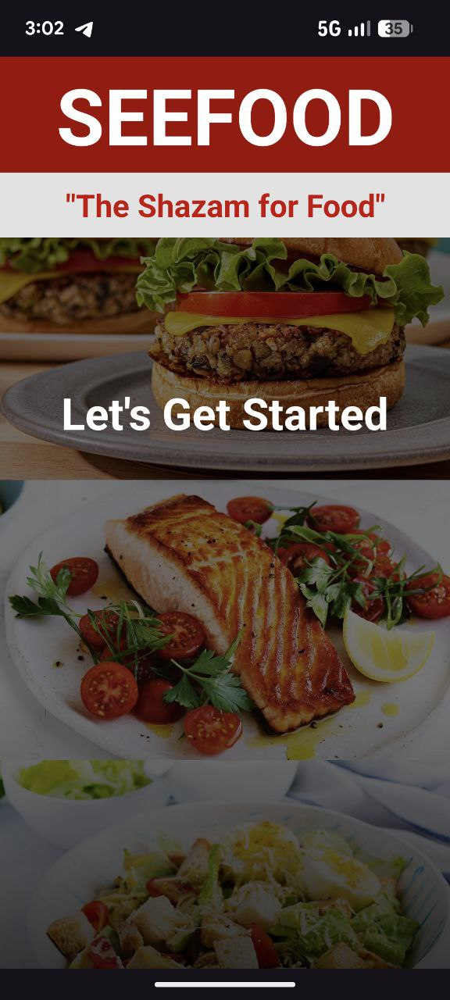
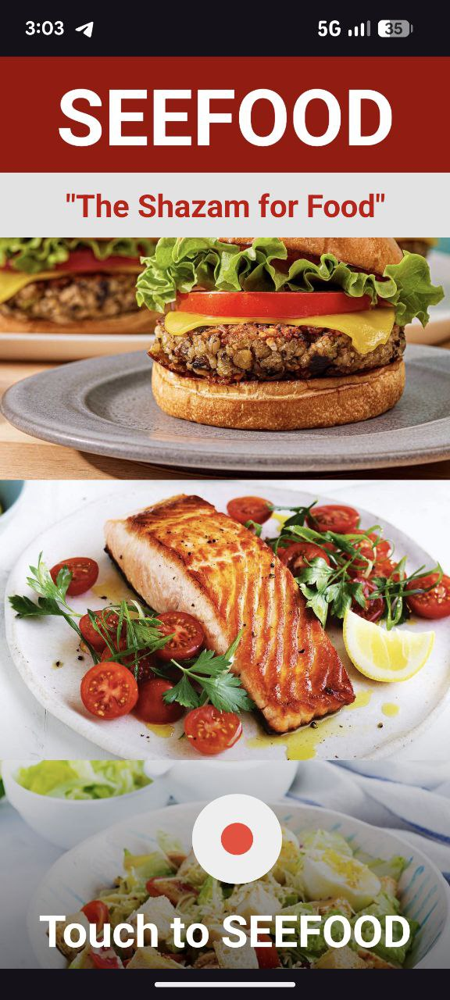
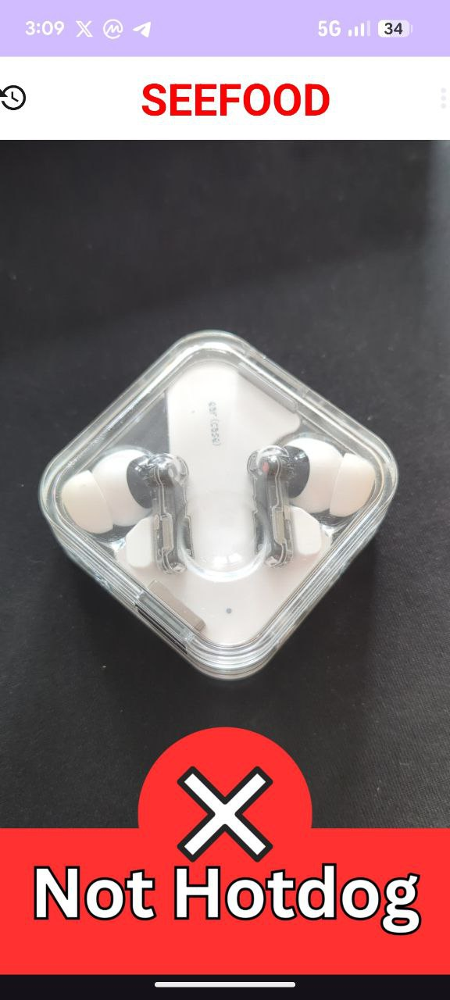
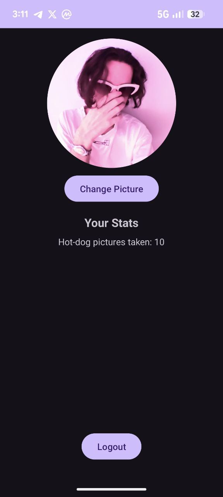
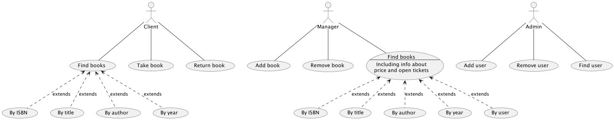

I`m 21 years old student with experience as software and hardware engineer. For now I`m studying at Technological University of the Shannon and working on my software development skills as much as I can in my free time. At the moment I`m working as a Solana Blockchain Developer at Osambit and also on other Solana projects about which I will talk later within the same page. Have a desire in learning under hood part of differnet technologies. Also like to present different presentations and projects in front of the people explaining some technical stuff.
Projects
Here are some of my projects:
EQUI SWAP
Aggregator/Swaping tool/Wallet manager
Website: Equi Swap
Pitch: Equi Swap - Pitch 2025
GitHub repo: equi-swap (front-end only)


We use our own indexer with microservice architecture. Each user is handled in a new thread with indexer as a separate service
Tech diagram

Recent updates:
25 Jun 2025: Private beta.
Solana Arb (private use only)
GitHub repo: PRIVATE FOR A REASON
This is probably one of the biggest achievements for me as there are barely 10 projects exists which have 100% as this one (I personally have seen only 2)
The project started its journey back in 5th May 2024 and still continuous to evolve
Program: Solscan
//this program is a second heart of this project which is crystal clear open for anyone to observe
Software works by having indexer which monitors blockchain calculates prices every time it receives an update from gRPC.
Software has its own simulation service so there is no need to make any API calls which minimizes the delay.
Deployed program recalculates the given transaction to check if any changes happen during transaction landing.
Made in rust to maximize performance.
Does 12-14k transactions on average per day
Grafana is used to monitor overall performance of the bot (internal use only)


AI assistant ESP32
Small (6x3cm) portable device which you can talk to while holding the pressure sensor and get a response on display
Device connects to a phone with BLE and requires a simple android app which works as a communicator between device and server, so you dont need to connect this device to a wifi or buy separate sim card


SEEFOOD
A mobile app that uses AI to detect whether a given food item is a hotdog or not a hotdog. Originally a fun parody project, it demonstrates skills in machine learning, image classification, and mobile development.
UI mimics the original app from the HBO series Silicon Valley




Library ERP
The main idea of this project is to make a GUI and web site application which will be able to work with SQL databases, will be fully customizeble to use it for any needs.
GitHub repo: LibraryERP


I tried to make the whole application with mvc design pattern so its easy to make changes and make updates to it.
The whole functionality available at the moment is represented on the diagram bellow.
Recent updates:
10 Aug 2023: Finally connected DB so you not losing any progress after closing the application. Finally made a GUI interface for the application and got rid of termianl view.